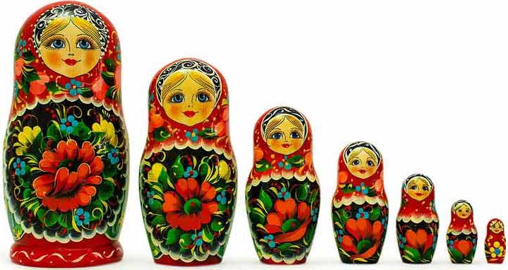

¡Bienvenido a nuestra web!
Si piensas en Rusia y su cultura, ¿qué te viene a la cabeza? Las matrioskas, ¿verdad? Por si no es así o no sabes a qué nos referimos con este nombre, las matrioshkas son las tradicionales muñecas rusas hechas de madera con múltiples figuras en su interior, es decir, la misma muñeca de distintos tamaños que encajan unas dentro de las otras. Seguro que las has visto más de una vez o has oído hablar de ellas, pero ¿saber cuál es la historia de la matrioska? En este artículo de unComo te explicamos con detalle el origen de las conocidas muñecas rusas.
